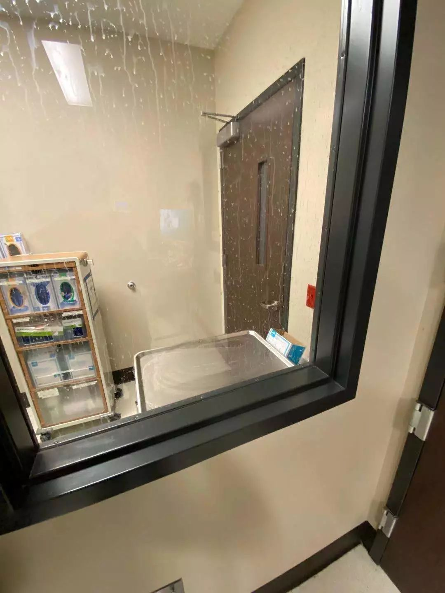
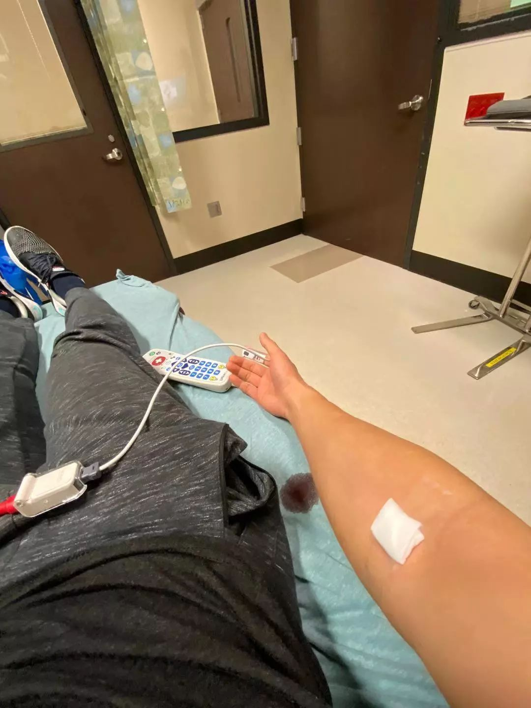

口述 | 武汉诗人小引：灾难之后，写诗并非是野蛮的
原文链接 备份链接 _ _ _ _ 这几天，有媒体称“风月同天”不如“武汉加油”，后被群嘲。因为它背后的逻辑，并不是在讨论“灾难当头可否允许诗意停留”，而是把诗意直接当作非日常的存在，好像感风吟月都是特殊的情绪仪式，平日里不好随意散发的， …

文｜西答
这几天，阳光洒满了湾区。太平洋那边，扬子江畔的武汉这几日依然湿冷，天气预报说今明两天降水概率50%。
“我们是1月14号从湖北回到湾区的，这也过去三周多了。”大J是湾区某高科技公司的软件工程师，俗称高级“码农”。他语气平静，好像很少有情绪起伏，不急不缓地回忆着这一段让他一家终生难忘的经历。
像很多“美漂”家庭一样，大J的家人都在国内。双职工家庭每年都攒着一个大假，用来回国或者来一趟长途旅行。今年他们赶在圣诞假期前回国，在家乡湖北短暂待了几日，就和妻子去云南采采风。祖国的山川湖海看也看不完，每次回国只要时间来得及，都要抓紧机会多出去走走看看。在云南游玩的一周时间里，大J收到朋友的信息，告知武汉出现“不明原因肺炎”，但是“只是告知一下，没什么特别的。”1月4日一家回到荆州，一切都很祥和宁静。
趁着这大好时光，大J接下来几日又独自穿梭了几座城市，会友、观光。作为“硬核”滑雪发烧友，大J这趟还独自专程去了趟日本滑雪。对于滑雪的执着，大J属于“看清了滑雪的危险性，还依然热爱着”。一直到13号再回到武汉，待了一个晚上，14号和妻子、两岁的女儿从武汉踏上了回美国的航班。
一切非常顺利，算是过了一个近乎完美的假期。
直到回来的第四天，变化排山倒海而来。
17号周五美国疾病控制和预防中心（CDC）发布新冠病毒警告，20号周一，大J开始感觉到喉咙不舒服，“一般我喉咙不舒服就是要病了，不知道是什么，感觉应该是某种病毒”。21号周二，“我们在新闻上看到西雅图那哥们发病了。”大J开始出现感冒发烧症状。
“周二开始我就打我所在城市的urgent care (应急诊)，我说我刚从武汉回来，有感冒症状，而且发烧，可能有冠状病毒感染，你们那里能测吗？”
“What is Coronavirus（冠状病毒）？Never heard of it。”隔着电话都能感觉到院方的茫然，“他们那时候可能确实还不知道是什么，说测不了，让我去找我的家庭医生。”
家庭医生是看非紧急的小病，一般需要提前一段时间的预约，大J电话打过去，也没约到自己的家庭医生，只能找了一个在旧金山城里的其他家庭医生看诊。“去之前他们还挺紧张的，跟我说，你到了我给你拿口罩，直接把你带到手术室，不用去前台。” 结果呢，“他就给我听了一下肺。说你症状不像。” 大J追问，“那你给我测一下吧，看看是什么病毒，普通流感病毒还是别的？”医生拒绝了这个请求，说不用查了，不像。

美国药房，口罩已售罄
“看了西雅图那个第一个新冠病例，再加上根据坊间消息的推测，我们一家当时很可能和那个哥们是同一班飞机，因为武汉没有直飞西雅图的。”
不确定的恐惧开始聚集，但是大J仍然苦于找到一个机构，给他一个确定的答案。
出于对别人负责的态度，大J通知了单位自己的症状，恰巧另外一个同事也出现不舒服，去了另外一所医院检查。“我之所以最终能被检测上，也是因为同事去的这家医院通报了旧金山的公共健康部。”期间大J还多次试图打CDC的电话，“他们电话非常难找，我终于给联系上了，一个接线员给我念了很长的一段关于新冠状病毒的介绍，还跟我们说这个病传染性很强，要小心哦！”哭笑不得间，大J追问是否有地方可以给做检测？“他们的建议就是自我隔离，他们没有地方检测，让我在家呆着。”
最让大J头疼的才刚刚开始。
微信上有人开始从打听到催促，想知道大J到底得的是什么。因为在大J一家回来的第一周，出现感冒症状前，还和朋友以及朋友的孩子约了几次饭，“随着新闻上病例的增多，大家都开始担心。”
另一颗炸弹也被点爆，大J所在公司部门给员工发了一封短邮件，说到有一位同事刚刚从武汉回来，疑似病例，提到了流感症状，但是没有说明这位同事已经自我隔离数日，也没有说已检测是A型流感，也没提新冠病毒检测还在进行中。消息不胫而走，各种公司内部微信群炸开了锅。这封模棱两可的邮件内容被猜测，在人们的传递中，似乎拥有了比病毒还快的变异速度，“不出一个小时，我们就在不同的微信群里，看到了不同的消息截图，还有人开始跟我打听这微信里传的人是不是你家老公，”大J的妻子在旁边补充道。
“这太扯了，没人能告诉我去哪里做这个检测。我想知道我得的是什么，我也想尽快告诉朋友们，但是没想到检测程序如此不清晰和复杂。”这时的大J比任何时候都需要一个答案。
焦灼着，继续在家隔离，但是家里还有个两岁多的孩子，大J两口子心中的担心逐渐发酵膨胀，慢慢化成了恐惧和无助。“很多时候，我拿着饭上楼吃，吃完下楼，都不知道该在哪洗碗。门把手要不要擦？穿鞋下楼，鞋底要不要擦？手套戴了几天，都不敢去碰家里的东西。孩子看着我叫爸爸，我也不敢抱她。”
线下的焦虑在线上继续发酵。大J回忆道：“这种危难情况下，人性的很多东西都被放大了。从我的这次经历，我看到有的人特别八卦，每天不停地讨论这个病毒，传播各种有的没的消息。很多人忍受不了，只能悄悄退群了。特别多谣言，特别多截屏，打码的不打码的，真的是几分钟之后我从不同的渠道看到自己的截屏。”
一个病毒，打开了人性的潘多拉。当我们跳出自己的微信群，画风并没有多不同。数不尽的新闻故事，记录着这场灾难冲击波的威力。甚至可以说每一个中国家庭都受到了波及，只是程度上的差别：因为一条转发的请求提高生活待遇的微博，被迫在沪集宿宾馆隔离的湖北女孩毕燕雯被网友“逼”到自杀。武汉封城，很多慢性病患者的生活和生命也都受到了威胁：必须严格用药的艾滋病人，拿不到药物的抓心挠肺；高危怀孕的准妈妈们，也慢慢失去了特殊药物和妇科医生的专业指导，度日如年；肾透析患者没有床位和资源，形若等死。数不尽的心碎故事，诉说着普通百姓的惶惶不可终日。
终于，大J接到一个通知，告知旁边某郡的一个医院可以在负压病房采集样本。湾区已经有几例疑似在那里做了采集。大J马不停蹄地赶去。周四做了采样，大J每天催促实验室通知结果，“无助，非常无助。”到今天大J还没有回复许多朋友询问的微信，“真的不在那个状态，没心情去回复。”
终于，在第二个周二大J收到了结果：阴性。

负压病房

接受检查
一时间仿佛甘露降临，附在半空中的乱飘的尘埃，终于可以附着在这露水带来的湿润上，落回地面。
截至2月初，美国CDC共检测210份疑似样本，确诊12例。美国的医疗资源和应急救助体系相对完善，但痛苦无法被替代，无法被量化，我们只能凭想象模糊地共情一下这200多个家庭所经历的暗无天日 。
这一遭，大J的妻子经历了多方位的信息过载和情感挑战。丈夫被隔离期间，她请假在家带娃，“舆论的压力很大，没有时间和精力担心自己的身体 。万一大J被确诊，我真的会崩溃。”大J的妻子所工作的单位便是之前疯传的新冠病毒“特效药”瑞德斯韦的制药公司Gilead, 当看到自己公司CEO “patients first”（病人第一）的发言，“看到希望，不过这也是作为一个商人，应该做的最正确的事。”
危机和机遇，很多时候好像印在了一张卡片的两面。Gilead几年前成功研发出治愈丙肝的特效药后，反而经历了股市滑铁卢，原因很简单，病治好了，没有人再需要吃药。与此同时，高价的药物也受到了社会的非议。“相比较雪中送炭，人们其实喜欢锦上添花，”大J妻子继续解释道，“比如，医生给你看病，我们觉得理所应当，因为这是他们的工作，我们不在乎他们是不是在用自己的命做这份工作；药厂开发药物，花费大量资金投入，但是很多人可能觉得，既然你有了这个药，就应该低价给我们用，不然就是不道德。” 由于这几年Gilead的股市表现平平，这次危机加速了Remdesivir 临床三期在国内的实验进度，或许这次Gilead能打一次翻身仗。
大J的家人在国内，疫情暴发前离开了湖北，当地公安局可能根据手机漫游信号锁定湖北号码，“现在每天我爸妈还会定时收到公安局的电话，让他们上报体温，每天。”大J妻子的家人依然在荆州，她的爸爸和妈妈被分离在城区的两个家，因为“爸爸每天要去单位上班，接触的人复杂，他不想把风险传递给我妈。”大J妻子语气里写满了担心和无奈。“我的老父亲，现在还没有回家，已经连续熬了几个夜了。”大J妻子发来一个哭泣的表情。父母对远游子女“临行密密缝，唯恐迟迟归”的忧虑，在今天被翻转，城外的孩子们遥望着守城的父亲母亲，牵挂和爱化成泪水，无声地落下。
风险最大的可能就是大J妻子的表妹，她是武汉儿童医院的护士，已经开始在一线开始核酸标本采集，她之前还哺乳期 。武汉封城后，公共交通被切断，表妹就骑共享单车去上班。最近，表妹住进了医院旁边的酒店，为了降低感染家人的风险，“已经不回家了。”大J妻子发来家人群的截图，家人感慨她们“伟大、勇敢”。
2月5日，一个可爱的新生儿呱呱落地，30小时后，婴儿被鉴定患有新冠肺炎，疑似母婴传递的第一例。这个婴孩降生的医院正是大J妻子表妹工作的儿童医院。
在我们的对话接近尾声的时候，大J妻子缓缓地舒了一口气，用四个字总结了这次的经历：悲愤交加。前一阶段自我隔离的时候，流言蜚语的中伤让她瞥见了“在湖北外的湖北人受到的伤害。我为他们感到心痛，我感同身受，我们这个小家所经历的和这些人相比较真的算不了什么，他们受到的伤害比我们多一千倍一万倍。” 第二阶段，出隔离后，痛苦的感觉并没有完全随之化解， “我意识到我需要在维护自己内心秩序和行使正义感的同时，还要保护自己的家人，我以前过度乐观了，我现在意识到我做不到这一点。”
这场灾难颠覆的不仅仅是人们的生活常态，很多人已经不再是以前的自己，很多事情都无法再简单回到过去。

西答
坐标：美国 旧金山
职业：医药数据分析
双职工小家庭，一老公一女儿，腹中还有一个小家伙。易被感动，擅长把刚喝进去的鸡汤迅速化成眼泪；热爱户外，精通把刚打进去的鸡血变成汗水。
点击阅读作者其他文章


与三明治一起记录特殊时期的中国城市记忆


原文链接 备份链接 _ _ _ _ 这几天，有媒体称“风月同天”不如“武汉加油”，后被群嘲。因为它背后的逻辑，并不是在讨论“灾难当头可否允许诗意停留”，而是把诗意直接当作非日常的存在，好像感风吟月都是特殊的情绪仪式，平日里不好随意散发的， …
原文链接 备份链接 来源：雪球App，作者： 八点健闻，（https://xueqiu.com/1553077980/140215390） 岳父发烧9天 ，妻子发烧6天 ，CT报告都显示“双肺严重感染” ，却一直没能得到检测 ，确认是不是 …
原文链接 备份链接 大家好，我是田静。 最近朋友给我推荐了一部韩国电影，叫《流感》，是一部灾难片。 流感的起因并不罕见，讲的是一群东南亚偷渡者历经艰险来到韩国务工，却因沾染猪流感在集装箱内感染而死，只留下一个幸存者顺势逃跑。 随后，流感病 …
原文链接 备份链接 若干年后回望，这一定是一段值得铭记的日子。因为新型冠状病毒感染的肺炎疫情，许多家庭无法团圆。疫情数据地图的每次刷新都令人揪心。我们和千万武汉人在一起，这不只是一句安慰，因为没有人能够置身事外。 之前，我们向用户征集这 …
原文链接 备份链接 06.02.2020本文字数：4302，阅读时长大约7.5分钟 导读：一周时间，武汉新增病例5.5倍增长，累计病例增长3.69倍。 作者 | 第一财经 马晓华 胥会云 武汉封城之后，湖北以外的各省份对新型肺炎展开了“ …